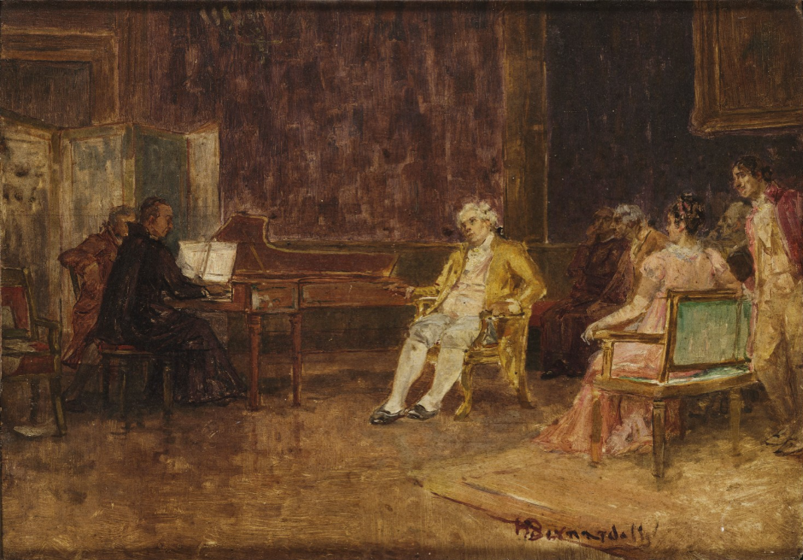

Cravo

História do Cravo
A referência mais antiga sobre sua criação é datada do século 14, na Itália, quando inicialmente foi chamado de clavicembalum. É considerado o mais importante e versátil instrumento de teclado desde finais do século 16 até o início do século 19, depois do órgão. Foi amplamente utilizado na Europa tanto para o desempenho de música para teclado solo, como também para música de câmara, orquestral e ópera. Além da Itália, outros centros de construção do instrumento floresceram, como a região de Flandres, Alemanha, Portugal, Inglaterra e França. O cravo caiu em desuso no início do século 19 e seu renascimento moderno se deu no início do século 20, a partir da construção de instrumentos industriais por uma renomada firma de pianos.
O cravo é um instrumento de teclado que possui formato semelhante ao do piano de cauda antigo, porém pode ser composto por um ou dois teclados. Difere do piano pelo fato de ter seu som produzido através de martinetes que beliscam as cordas.

Variações
Há vários tipos de instrumentos da família do cravo, desde o pequeno, em formato triangular (a espineta), passando pelo retangular (o virginal), até chegar ao instrumento na forma semelhante a do piano de cauda (o cravo propriamente dito), que poderá ter um ou dois teclados. Mesmo que a aparência varie, o som será sempre produzido da mesma forma, através do plectro. Diferentes modelos, de diversos tamanhos e formatos foram construídos ao longo dos séculos, por artesãos em vários países. Ainda que a corda seja pinçada da mesma maneira, seu timbre pode mudar bastante, de acordo com o formato e segundo as características construtivas.

Você sabia?
Após a chegada de D. João VI no Rio de Janeiro em 1808, os cravos também passaram a integrar os salões da corte. O pintor Henrique Bernardelli (1858-1936) produziu a tela intitulada "D. João VI ouvindo o padre José Maurício", em que é mostrada uma cena onde o mais famoso padre músico da cidade toca cravo para o rei.
O cravo continua presente no cenário musical contemporâneo carioca e brasileiro. Espetáculos teatrais, montagens de óperas e concertos de música erudita e de música brasileira são alguns exemplos da versatilidade do uso deste instrumento.